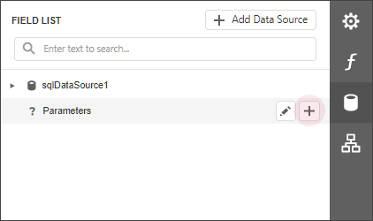
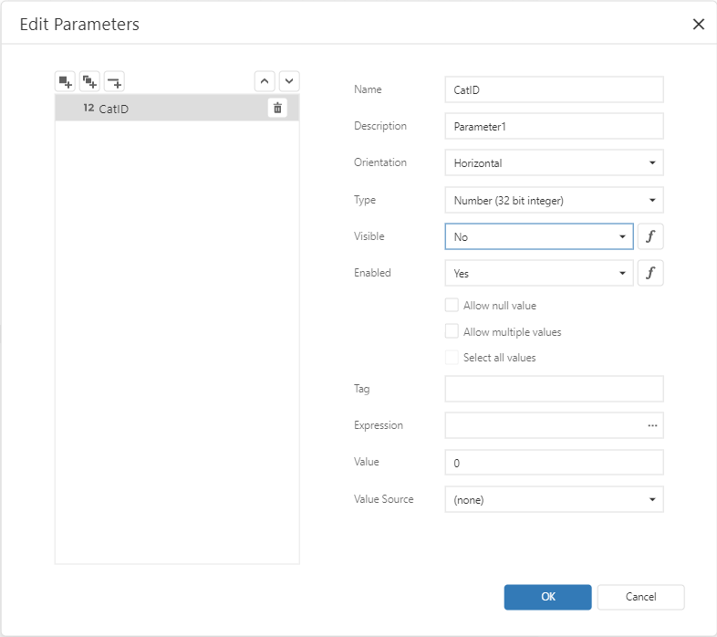
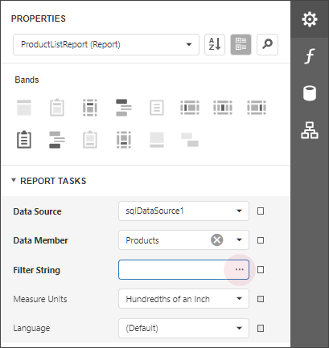
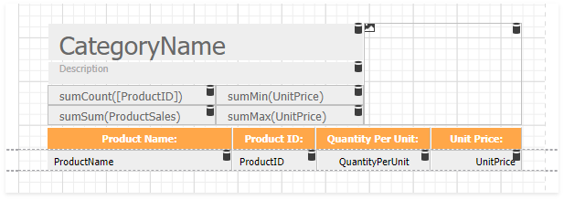
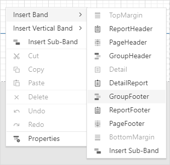
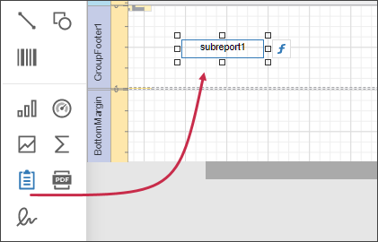
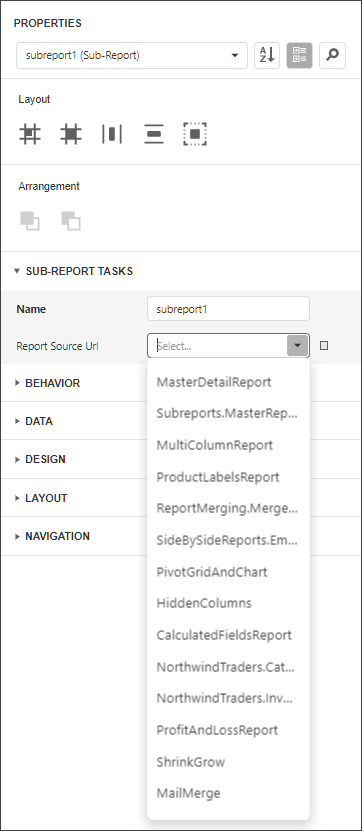
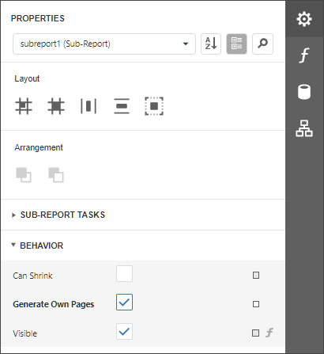
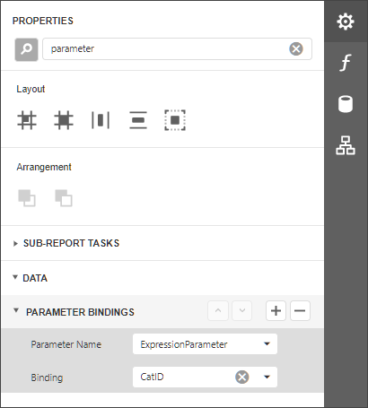

Use Data-Driven Page Sequence
This topic describes how to combine a table report that uses Portrait page orientation and a chart report that uses Landscape page orientation.

Follow the steps below to create a combined report:
Create a Chart Report
Create a report that shows data in the chart form. Bind the report to a data source. Set the report's Landscape property to true to enable the Landscape page orientation.

Add a parameter to your chart report to identify which data to use for the chart. Switch to the Field List tab and click the Parameters node's plus button.

Click the created parameter's edit button and set its Name and Type, and uncheck the Visible option.

Switch to the report's Properties tab. Click the Filter String option's ellipsis button.

In the Filter Editor dialog, construct an expression to compare the key data field to the created parameter.

Save the report.
Create the Base Report
Create a report bound to the same data source as the chart report, and arrange a layout like the one shown below:

Invoke the context menu and and click Insert Group Footer Band.

Drag a Subreport item from the Toolbox onto the added group footer band.

Select the subreport control. In the Subreport Tasks group, set the Report Source Url parameter to the chart report.

Enable the Generate Own Pages option to print the embedded report on separate pages and use its own page settings.

Bind the subreport's parameter used as a filter criterion to the master report's data field that serves as a source of the parameter value. Expand the Data category, select the Parameter Bindings section and add a new parameter binding. In the binding properties list, specify the data field to bind a subreport parameter to, and the parameter you want to bind.

Switch to Preview mode to see the combined report.
Your base report's Table of Contents and Document Map include bookmarks from the embedded report. Use the Parent Bookmark property to specify the nesting level for the embedded report's bookmarks.